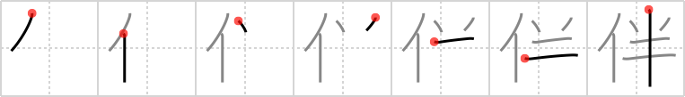

伴
← →
consort

Reading:
On-Yomi: ハン、バン — Kun-Yomi: ともな.う
Heisig story:
Person . . . half.
Koohii stories:
1) [Raichu] 27-2-2006(217): The person who is your consort is most commonly "your other half".
2) [notgoing2argue] 26-7-2007(131): Mr. T wants to splits himself in half so he can be his own CONSORT.
3) [myglagata] 12-3-2009(44): MR T's CONSORT is only HALF the size that he is (she's Japanese after all).
4) [CharleyGarrett] 28-7-2007(14): Mr. T will never take a consort. Marriage or nothing! No half-way measures for Mr. T!
5) [Jaunty] 2-7-2009(7): The Asari consort from Mass Effect looked half human.